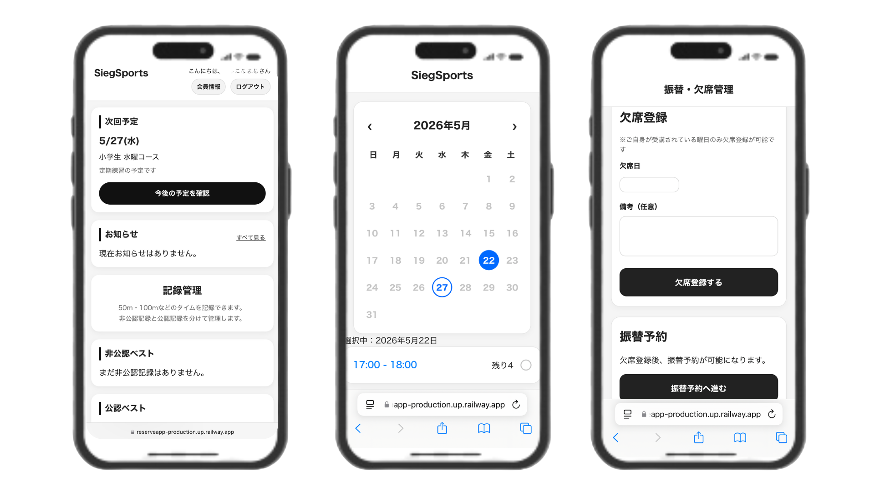

WORKS / SYSTEM
Reservation
System
実際のスクール運営から生まれた
予約・振替・会員管理システム
予約受付、欠席管理、振替管理、会員管理を一元化。
スポーツスクール運営で実際に感じた課題をもとに開発した、
現場目線の予約管理システムです。

PROBLEM
運営でこんなお悩みはありませんか？
予約受付がLINEで管理しきれない
欠席連絡が個別で届く
振替管理に時間がかかる
会員情報が散らばっている
保護者対応に追われる
運営作業で本来の指導時間が減る
SOLUTION
必要な機能を、
ひとつにまとめました。
予約・欠席・振替・会員管理・記録管理を一元化することで、
管理業務を効率化します。
管理者だけでなく、保護者や会員にとっても使いやすい導線を意識しています。
FEATURE
主な機能
01
予約管理
空き状況を確認しながら、24時間いつでも予約可能。
02
欠席管理
会員ページから簡単に欠席登録。連絡漏れを防ぎます。
03
振替管理
振替回数を自動管理。管理者の負担を軽減します。
04
会員管理
会員情報を一元管理し、必要な情報をすぐに確認できます。
05
練習日誌
日々の取り組みを記録し、継続的な成長をサポートします。
06
記録管理
過去の記録を可視化し、成長の変化を確認できます。
WHY
なぜこのシステムを
作ったのか
私自身がスポーツスクールを運営する中で、
予約管理や振替対応に多くの時間を費やしていました。
「もっと指導や運営の本質に集中したい」
そんな想いから、実際の運営課題を解決するために
このシステムを開発しました。
現場で使うからこそ、本当に必要な機能と使いやすさを大切にしています。
運営をもっとシンプルに。
スクール・教室運営に合わせた
予約システムをご提案します。